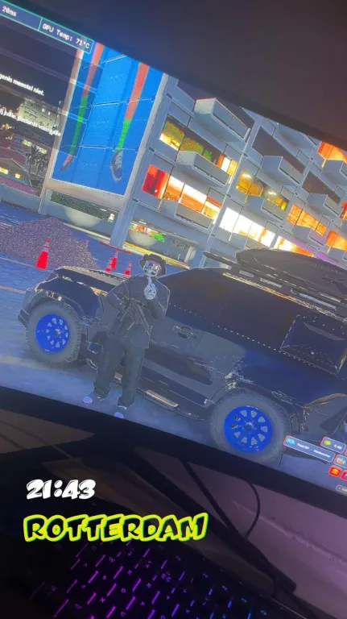
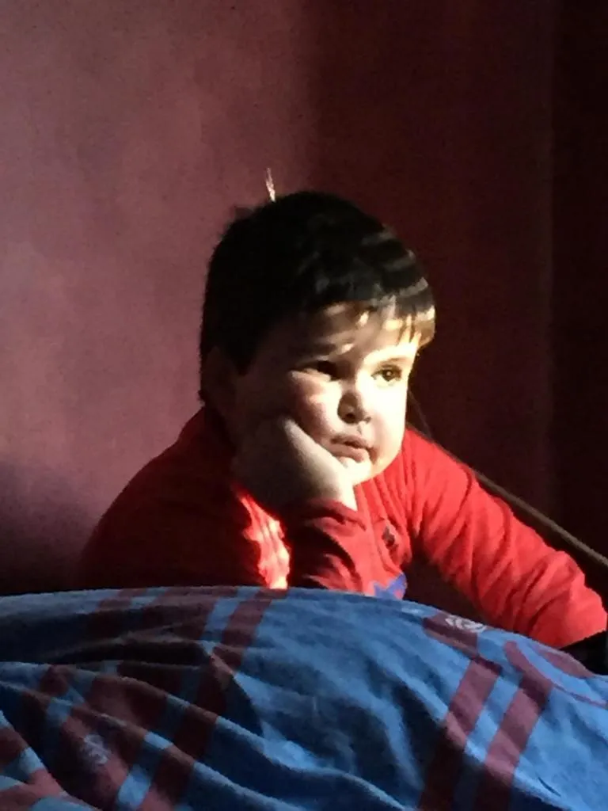

Gaming
Gaming is een van mijn interesses. Ik vind het leuk om verschillende games te spelen en nieuwe dingen te ontdekken.
Een paar voorbeelden van dingen die ik leuk vind en waar ik mee bezig ben geweest.

Gaming is een van mijn interesses. Ik vind het leuk om verschillende games te spelen en nieuwe dingen te ontdekken.

Ik maak soms foto's van plekken die ik interessant vind. Deze foto is gemaakt bij de Zwarte Zee.

Deze foto laat een stukje van mijn persoonlijke leven zien en hoort daarom ook bij mijn portfolio.